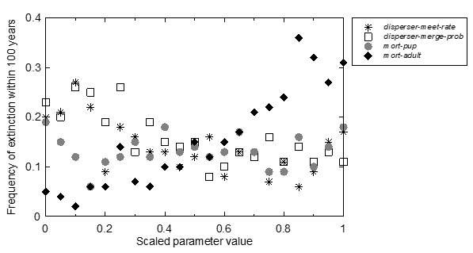
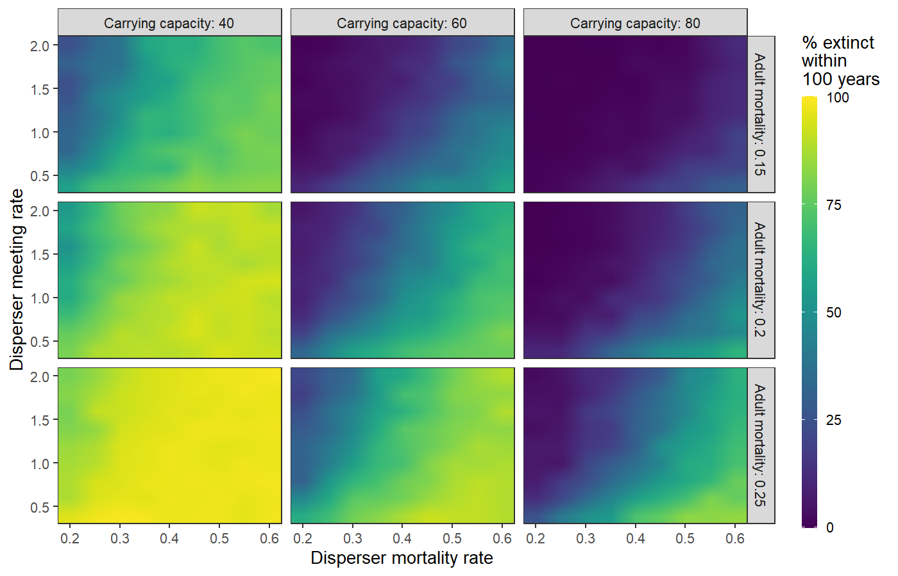
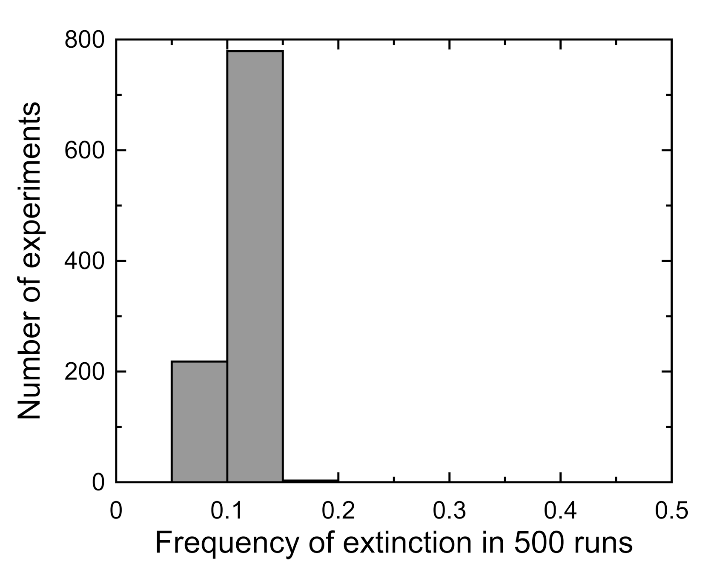
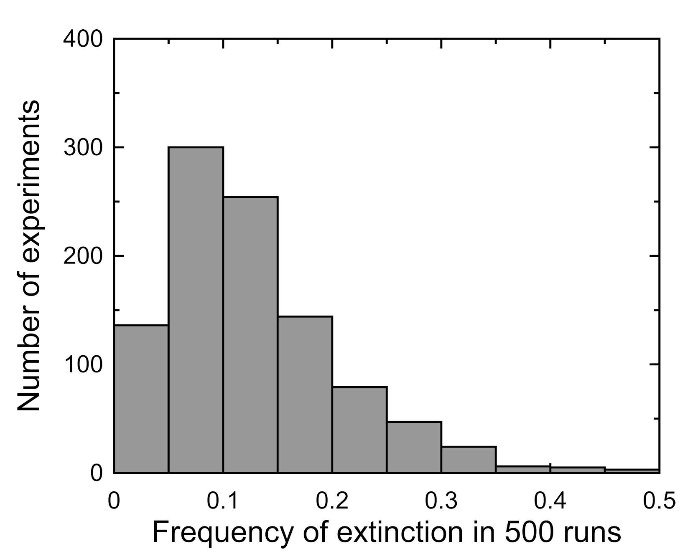

Agent-Based and Individual-Based Computational Modeling
Jonathan Gilligan
Class #25:
Tuesday, November 19
2019
Sensitivity, Uncertainty, Robustness
Sensitivity, Uncertainty, Robustness
Starting point: You have a working model that achieves some goal:
Reproduces multiple observed patterns
Identifies policies that could produce a desired outcome
…
How trustworthy and reliable are the model’s predictions?
Sensitivity Analysis focuses on how changing the model’s parameters affects the outcome.
How important is it for a parameter to have some exact value?
For policymaking, do we need to work hard to achieve just that value?
For science, do we need to work hard to measure that parameter very accurately?
Uncertainty Analysis focuses on how our uncertainty about the model’s parameters affects our certainty about the model’s outputs or predictions.
Robustness Analysis looks at bigger changes:
What parts of the model can we change or eliminate and still get the desired results?
Can we simplify the model without losing the desired behavior?
Sensitivity Analysis
Is high sensitivity good or bad?
Bad: If model is testing a general theory, but is very sensitive to parameter values, that is evidence against the theory.
Does model work across the entire range of observed values for parameters?
Good: If the model is being used to evaluate parameters we can’t measure directly, then higher sensitivity can mean that we can infer the values of those parameters more precisely, with less uncertainty.
Challenges: Computational Complexity
We would like to do global sensitivity analysis:
Vary all parameters over their entire ranges, in every combination.
Usually, we can’t: computationally unfeasible.
There are strategies to make global sensitivity analysis feasible, but they are complicated.
Sampling parameter values
Random (Monte Carlo)
Systematic (e.g., Latin Hypercube)
Instead: local sensitiity analysis:
Small variations around most likely values of parameters.
Vary one parameter at a time, or multiple parameters?
Interactions
Steps in Sensitivity Analysis
Choose one or more currencies that we will use to evaluate the model (e.g., a pattern we want to reproduce).
Single-Parameter analysis:
Vary each parameter one at a time with the others set to their nominal value
Interactions:
Vary all the parameters simultaneous over a limited range
Example of Sensitivity Analysis
Example: Wild Dog Model
Packs of wild dogs in nature preserve.
Goal: Keep them from going extinct in next 100 years.
Currency: Fraction of runs in which dogs go extinct within 100 years.
Vary parameters:
Mortality rate of adult dogs in pack
Mortality rate of dispersers
Meeting rate of disperser groups
Carrying capacity
Single-Parameter Analysis

Analyzing Interaction Data:
Contour plots
“Small multiple” plots
Analyze a four-dimensional data set using a grid of nine plots.

Uncertainty Analysis
Uncertainty Analysis
We usually don’t know the exact values of parameters.
How much does our uncertainty about the parameters’ values affect our certainty about the model’s predictions?
Starting point:
Choose one or more currencies.
What parameters do we want to analyze?
Define a probability distribution for each parameter that represents our uncertainty about its value.
Run the model many times, each time drawing a different random value for each parameter from the distributions.
Analyze the output:
Probability distribution of the currency
Uncertainty in Wild Dog Model

Parameters at nominal (default) values.

Parameters randomly sampled from uncertainty distribution.
Robustness Analysis
Robustness Analysis
Sensitivity analysis and uncertainty analysis mostly made small changes to parameters and kept them within realistic limits
Robustness analysis tries to break the model:
What happens when parameters take unrealistic values?
What happens when we change remove different parts of the model?
Identify which parts of the model are necessary, and which are unnecessary.
Patterns or phenomena that were not deliberately programmed in, but arise spontaneously from interactions of agents with each other and with environment.
Pattern-oriented modeling:
Start simple, but aim to build in enough complexity to produce multiple patterns seen in nature, or predicted in theory.
As you design model think about what kinds of “currency” you will use to assess its value.